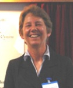

Foreign Partners - Dr. Margaret Deuchar
Position: Professor of Linguistics
Institution: Bangor University, Wales
Lab/Group: ESRC Centre for Research on Bilingualism in Theory and Practice
Bio:
Margaret Deuchar is Professor in Linguistics at Bangor University, UK, and Director of the ESRC Centre for Research on Bilingualism in Theory and Practice (www.bilingualism.bangor.ac.uk). Her current research interests include evaluating alternative models of code-switching with reference to various language pairs including Welsh-English, Spanish-English and Spanish-Welsh.
Representative Publications:
- Deuchar, M. (1984). British Sign Language. London: Routledge.
- Deuchar, M. and Clark, A. (1996). Early bilingual acquisition of the voicing contrast in English and Spanish. Journal of Phonetics 24, 351-65.
- Deuchar, M. (1999). Are function words non-language-specific in early bilingual two-word utterances? Bilingualism: Language and Cognition 2:1, 23-34.
- Deuchar, M. & Quay, S. (1998). One vs. two systems in early bilingual syntax: Two versions of the question. Bilingualism: Language and Cognition 1:3, 231-243.
- Deuchar, M. & Quay, S. (1999). Language choice in the earliest utterances: a case study with methodological implications. Journal of Child Language 26:2, 461-475.
- Deuchar, M. and Quay, S. (2000). Bilingual Acquisition: Theoretical Implications of a Case Study. Oxford: OUP.
- Deuchar, M. and Vihman, M. (2002). Language contact in early bilinguals. The special status of function words. To appear in M.C. Jones and E. Esch (eds), Contact-Induced Language Change: An Examination of Internal, External and Non-linguistic Factors. The Hague: Mouton, 267-81.
- Leech, G.N., Deuchar, M. and Hoogenraad, R. (2005). English Grammar for Today. London: Macmillan. [second edition]
- Deuchar, M. (2005) Congruence and code-switching in Welsh. Bilingualism: Language and Cognition 8:3, 1-15.
- Deuchar, M. (2006) Welsh-English code-switching and the Matrix Language frame model". Lingua. 116: 11, 1986-2011.
- Deuchar, M., Muysken, P. and Sung-Lan Wang (2007), Structured variation in code-switching; towards an empirically based typology of bilingual speech patterns. International Journal of Bilingual Education and Bilingualism 10:3, 298-340.
- Deuchar, M. & Davies, P. (2009). Code switching and the future of the Welsh language. International Journal of the Sociology of Language, 195, 15-38.
- Davies, P. & Deuchar, M. (2010). Using the Matrix Language Frame model to measure the extent of word-order convergence in Welsh-English bilingual speech. In A. Breitbarth, C. Lucas, S. Watts and D. Willis (Eds.) Continuity and Change in Grammar. Amsterdam: John Benjamins Publishing Company, 77-95.
- Herring, J. Deuchar, M. Parafita Couto, M.C. & Moro Quintanilla, M. (2010), '"When I went to Canada, I saw the madre": evaluating two theories' predictions about codeswitching between determiners and nouns using Spanish-English and Welsh-English bilingual corpora', International Journal of Bilingual Education and Bilingualism 13:5, 553-573.
- Carter, D., Parafita Couto, M.C., Davies, P. and Deuchar, M. (2010). A corpus-based analysis of codeswitching patterns in bilingual communities. Revista Española de Lingüística.
- Parafita Couto, M. C., Carter, D., Davies, P. & Deuchar, M. (in press) Factors determining code-switching patterns in Spanish-English and Welsh-English communities. Revista de la Asociación Española de Lingüística Aplicada.
- Deuchar, M. Code-switching. (in press) Encyclopedia on Applied Linguistics.
- Parafita Couto, M., Davies, P., Carter, D. and Deuchar, M. (in press) Uniformity and variability in the choice of matrix language. A tale of two communities. To appear in Mennen, I. and Thomas, E.M. (eds) Unravelling Bilingualism, Multilingual Matters.
- Deuchar, M., Davies, P., Herring, J., Parafita, M. and Carter, D. (in press) Building bilingual corpora: Welsh-English, Spanish-English and Spanish-Welsh. To appear in Mennen, I. and Thomas, E.M. (eds) Unravelling Bilingualism, Multilingual Matters.
- Stammers, J. and Deuchar, M. (accepted subject to revision) Refuting the nonce borrowing hypothesis: evidence from English-origin verbs in Welsh. Bilingualism: Language and Cognition.
